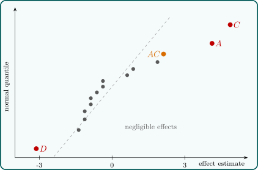

8.4 A single replicate
The number of runs, \(2^k\), grows quickly: \(64\) for six factors, \(128\) for seven. Often only one replicate can be afforded, and then there is no internal estimate of error: every degree of freedom is used by an effect. The analysis relies on the sparsity of effects principle: most systems are dominated by some of the main effects and low-order interactions, and most high-order interactions are negligible.
If an effect is in fact zero, its estimate is \(N(0, \sigma ^2/2^{k-2})\), and all such estimates are independent with the same variance. A normal probability plot of the \(2^k - 1\) effect estimates therefore shows the negligible ones lying along a straight line through the origin, while real effects fall off the line, at either end. The negligible effects can then be pooled into an estimate of error. The method is due to Cuthbert Daniel (1959). A half-normal plot of the absolute values against the quantiles of \(|Z|\) is a common variant that puts all large effects at the top right.
Example 8.4.1. The effects of four factors on a response were studied in a single replicate of a \(2^4\) design:
| run | \(y\) | run | \(y\) | run | \(y\) | run | \(y\) |
| \((1)\) | \(8\) | \(c\) | \(10\) | \(d\) | \(7\) | \(cd\) | \(7\) |
| \(a\) | \(9\) | \(ac\) | \(16\) | \(ad\) | \(7\) | \(acd\) | \(14\) |
| \(b\) | \(9\) | \(bc\) | \(13\) | \(bd\) | \(5\) | \(bcd\) | \(10\) |
| \(ab\) | \(11\) | \(abc\) | \(22\) | \(abd\) | \(10\) | \(abcd\) | \(13\) |
The total is \(171\) and \(\sum y^2 = 2093\). Each effect is its contrast divided by \(2^{4-1} = 8\). For example, the \(AB\) column has \(+\) where \(a\) and \(b\) are both present or both absent, so \begin {align*} \text {Contrast}_{AB} &= \bigl [(1) + ab + c + abc + d + abd + cd + abcd\bigr ] \\ &\quad - \bigl [a + b + ac + bc + ad + bd + acd + bcd\bigr ] \\ &= (8 + 11 + 10 + 22 + 7 + 10 + 7 + 13) \\ &\quad - (9 + 9 + 16 + 13 + 7 + 5 + 14 + 10) \\ &= 88 - 83 = 5 , \end {align*}
and \(\widehat {AB} = 5/8 = 0.625\). In the same way \(\widehat {BC} = 7/8 = 0.875\) and \(\widehat {ABC} = -7/8 = -0.875\). The fifteen estimates are
| effect | estimate | effect | estimate | effect | estimate |
| \(A\) | \(4.125\) | \(AC\) | \(2.125\) | \(ABC\) | \(-0.875\) |
| \(B\) | \(1.875\) | \(AD\) | \(-0.375\) | \(ABD\) | \(-0.375\) |
| \(C\) | \(4.875\) | \(BC\) | \(0.875\) | \(ACD\) | \(-0.875\) |
| \(D\) | \(-3.125\) | \(BD\) | \(-1.125\) | \(BCD\) | \(-0.625\) |
| \(AB\) | \(0.625\) | \(CD\) | \(-1.125\) | \(ABCD\) | \(-1.375\) |
Ordered, they are plotted against the normal quantiles \(\Phi ^{-1}\bigl ((i - 0.5)/15\bigr )\) in Figure 10. The eleven smallest lie close to a line through the origin; \(A\), \(C\) and \(D\) fall clearly away from it, and \(AC\) lies a little off the line at the top.

Example 8.4.2. Keeping \(A\), \(C\), \(D\) and, for a check, \(AC\) in the model, and pooling the other eleven effects into error, \(SST = 2093 - 171^2/16 = 265.44\) and each effect sum of squares is \(\text {Contrast}^2/16 = (8\hat E)^2/16 = 4\hat E^2\). So
| source | SS | df | \(F_0\) | \(p\) |
| \(A\) | \(68.06\) | \(1\) | \(16.57\) | \(0.002\) |
| \(C\) | \(95.06\) | \(1\) | \(23.14\) | \(0.0005\) |
| \(D\) | \(39.06\) | \(1\) | \(9.51\) | \(0.010\) |
| \(AC\) | \(18.06\) | \(1\) | \(4.40\) | \(0.060\) |
| error | \(45.19\) | \(11\) | ||
| total | \(265.44\) | \(15\) |
with \(MSE = 4.108\) and \(F_{0.05,1,11} = 4.84\). The main effects of \(A\), \(C\) and \(D\) are significant; the \(AC\) interaction is not quite significant at \(5\%\), which agrees with its position near the line. Factors \(A\) and \(C\) raise the response and \(D\) lowers it; \(B\) appears to have no effect. Since \(B\) is not involved in any important effect, the design can be viewed as a \(2^3\) factorial in \(A\), \(C\) and \(D\) with two replicates. This projection property holds generally: a \(2^k\) design collapses into a replicated \(2^{k-1}\) design when one factor is dropped.
Remark. The normal plot is a judgement, not a test. A more formal version is Lenth’s method: estimate the standard error of an effect robustly by the pseudo standard error \(PSE = 1.5\cdot \mathrm {median}\{|\hat E| : |\hat E| < 2.5s_0\}\), where \(s_0 = 1.5\cdot \mathrm {median}|\hat E|\), and judge as active the effects exceeding a \(t\)-based margin of error. For the \(2^4\) data, \(s_0 = 1.5 \times 1.125 = 1.69\), \(PSE = 1.5\), and with the conventional \(t_{0.025,\,m/3}\) on \(m = 15/3 = 5\) degrees of freedom the margin is \(2.571 \times 1.5 = 3.86\), which picks out \(A\) and \(C\) and leaves \(D\) just below. Different methods disagree at the margins, and a borderline effect should be confirmed by further runs.
Questions on this section
Stuck on something here? Ask below and it stays attached to this topic.